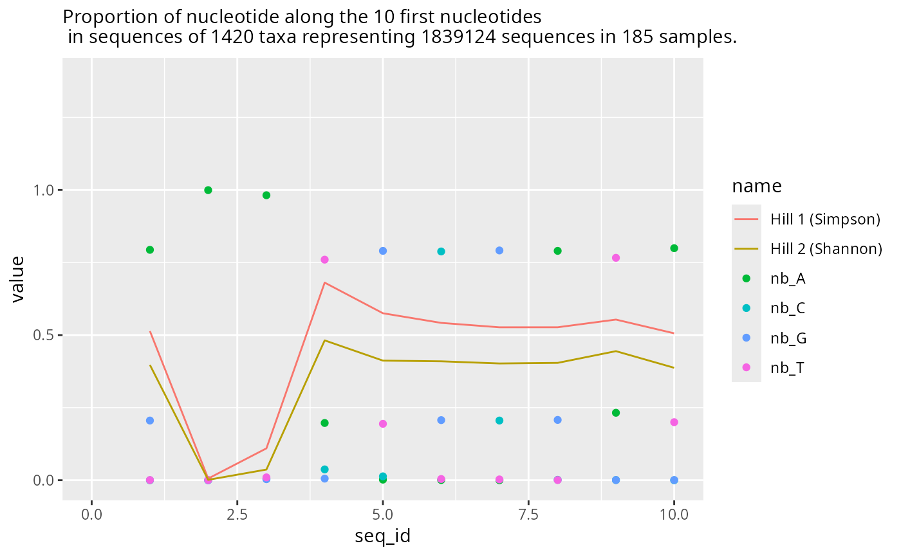
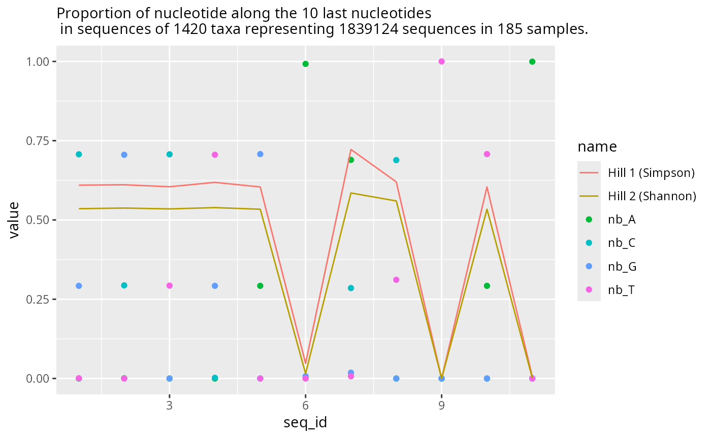
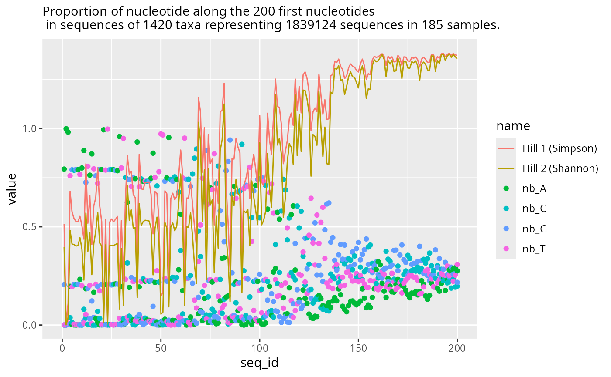
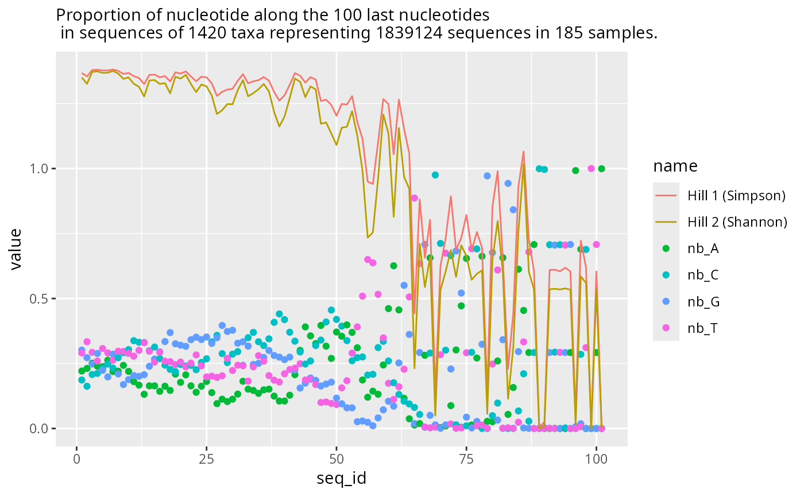
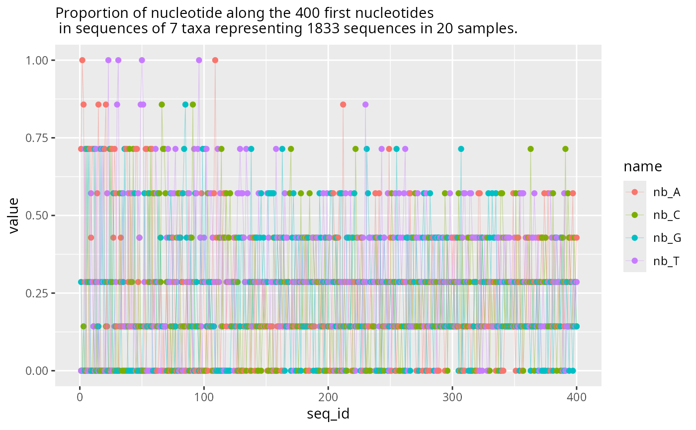
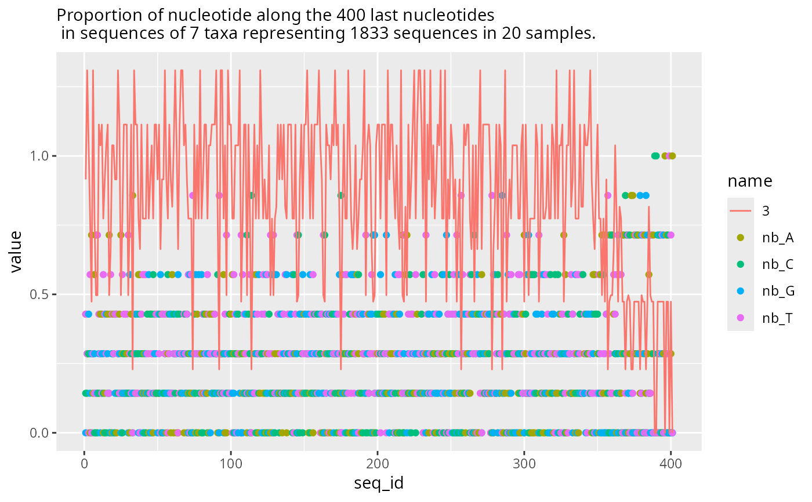

Plot the nucleotide proportion at both extremity of the sequences
Source:R/plot_functions.R
plot_refseq_extremity_pq.Rd
It is a useful function to check for the absence of unwanted patterns caused for example by Illumina adaptator or bad removal of primers.
If hill_scale is not null, Hill diversity number are used to represent the distribution
of the diversity (equitability) along the sequences.
Usage
plot_refseq_extremity_pq(
physeq,
first_n = 10,
last_n = 10,
hill_scales = c(1, 2),
min_width = 0
)Arguments
- physeq
(required) a
phyloseq-classobject obtained using thephyloseqpackage.- first_n
(int, default 10) The number of nucleotides to plot the 5' extremity.
- last_n
(int, default 10) The number of nucleotides to plot the 3' extremity.
- hill_scales
(vector) A vector defining the Hill number wanted. Set to NULL if you don't want to plot Hill diversity metrics.
- min_width
(int, default 0) Select only the sequences from physeq@refseq with using a minimum length threshold. If
first_nis superior to the minimum length of the references sequences, you must use min_width to filter out the narrower sequences
Value
A list of 4 objects
p_start and p_last are the ggplot object representing respectively the start and the end of the sequences.
df_start and df_last are the data.frame corresponding to the ggplot object.
Examples
res1 <- plot_refseq_extremity_pq(data_fungi)
names(res1)
#> [1] "plot_start" "plot_last" "df_start" "df_end"
res1$plot_start
#> Warning: Removed 1652 rows containing missing values or values outside the scale range
#> (`geom_point()`).
#> Warning: Removed 826 rows containing missing values or values outside the scale range
#> (`geom_line()`).

res1$plot_last

res2 <- plot_refseq_extremity_pq(data_fungi, first_n = 200, last_n = 100)
res2$plot_start
#> Warning: Removed 892 rows containing missing values or values outside the scale range
#> (`geom_point()`).
#> Warning: Removed 446 rows containing missing values or values outside the scale range
#> (`geom_line()`).

res2$plot_last

plot_refseq_extremity_pq(data_fungi,
first_n = 400,
min_width = 400,
hill_scales = NULL
)$plot_start +
geom_line(aes(y = value, x = seq_id, color = name), alpha = 0.4, linewidth = 0.2)
#> Cleaning suppress 0 taxa ( ) and 165 sample(s) ( A10-005-B_S188_MERGED.fastq.gz / A10-005-H_S189_MERGED.fastq.gz / A10-005-M_S190_MERGED.fastq.gz / A12-007_S191_MERGED.fastq.gz / A12-007-B_S2_MERGED.fastq.gz / A8-005_S4_MERGED.fastq.gz / A9-012_S5_MERGED.fastq.gz / AB29-ABMX-H_S6_MERGED.fastq.gz / AC29033_S8_MERGED.fastq.gz / AD26-005-B_S9_MERGED.fastq.gz / AD26-005-H_S10_MERGED.fastq.gz / AD30-ABMX-M_S12_MERGED.fastq.gz / AD32-007-M_S13_MERGED.fastq.gz / ADABM30X-H_S15_MERGED.fastq.gz / ADABM30X-M_S16_MERGED.fastq.gz / B17-014_S18_MERGED.fastq.gz / B18-006-B_S19_MERGED.fastq.gz / BA16-036bis_S20_MERGED.fastq.gz / BA17-050-B_S21_MERGED.fastq.gz / BB19-006-H_S22_MERGED.fastq.gz / BB6-019-B_S23_MERGED.fastq.gz / BB6-019-H_S24_MERGED.fastq.gz / BD14-021_S26_MERGED.fastq.gz / BE9-006-B_S27_MERGED.fastq.gz / BE9-006-H_S28_MERGED.fastq.gz / BE9-006-M_S29_MERGED.fastq.gz / BG7-010-B_S30_MERGED.fastq.gz / BG7-010-H_S31_MERGED.fastq.gz / BG7-010-M_S32_MERGED.fastq.gz / BH9-021_S33_MERGED.fastq.gz / BJ17-007-M_S34_MERGED.fastq.gz / BJ8-ABM-003_S35_MERGED.fastq.gz / BL7-006-B_S36_MERGED.fastq.gz / BL7-006-H_S37_MERGED.fastq.gz / BL7-006-M_S38_MERGED.fastq.gz / BN11-041_S39_MERGED.fastq.gz / BO8-002_S41_MERGED.fastq.gz / BO8-005_S42_MERGED.fastq.gz / BP11-001-B_S43_MERGED.fastq.gz / BP11-001-H_S44_MERGED.fastq.gz / BP11-001-M_S45_MERGED.fastq.gz / BP12-025-B_S46_MERGED.fastq.gz / BP14-006_S47_MERGED.fastq.gz / BQ3-019_S48_MERGED.fastq.gz / BQ4-018-B_S49_MERGED.fastq.gz / BQ4-018-H_S50_MERGED.fastq.gz / BQ9ABM-002_S52_MERGED.fastq.gz / BS14-006_S54_MERGED.fastq.gz / BT-006-M_S55_MERGED.fastq.gz / BT7-006_S56_MERGED.fastq.gz / BV11-002-B_S57_MERGED.fastq.gz / BV11-002-M_S59_MERGED.fastq.gz / C1-001_S61_MERGED.fastq.gz / C21-NV1-H_S63_MERGED.fastq.gz / C21-NV1-M_S64_MERGED.fastq.gz / CA12-024_S66_MERGED.fastq.gz / CA9-027_S67_MERGED.fastq.gz / CA9-X_S68_MERGED.fastq.gz / CB8-019-B_S69_MERGED.fastq.gz / CB8-019-H_S70_MERGED.fastq.gz / CB8-019-M_S71_MERGED.fastq.gz / CB9-013_S72_MERGED.fastq.gz / CC3-044_S73_MERGED.fastq.gz / CC8-003_S74_MERGED.fastq.gz / D18-003-B_S78_MERGED.fastq.gz / D18-003-H_S79_MERGED.fastq.gz / D18-003-M_S80_MERGED.fastq.gz / D22-NVABM1_S81_MERGED.fastq.gz / D61-010-B_S82_MERGED.fastq.gz / D9-027-H_S84_MERGED.fastq.gz / D9-027-M_S85_MERGED.fastq.gz / DBM-ABM-001_S86_MERGED.fastq.gz / DJ2-008-B_S87_MERGED.fastq.gz / DJ2-008-H_S88_MERGED.fastq.gz / DP4-ABM001_S90_MERGED.fastq.gz / DS1-ABM002-B_S91_MERGED.fastq.gz / DS1-ABM002-H_S92_MERGED.fastq.gz / DS1-ABM002-M_S93_MERGED.fastq.gz / DU3-045-B_S94_MERGED.fastq.gz / DW4-007_S95_MERGED.fastq.gz / DY5-004-B_S96_MERGED.fastq.gz / DY5-004-H_S97_MERGED.fastq.gz / DY5-004-M_S98_MERGED.fastq.gz / DZ6-ABM-001_S99_MERGED.fastq.gz / E9-009-B_S100_MERGED.fastq.gz / E9-009-H_S101_MERGED.fastq.gz / E9-009-M_S102_MERGED.fastq.gz / EA5-ABM-001_S103_MERGED.fastq.gz / EC2-013-B_S104_MERGED.fastq.gz / F6-ABM-001_S105_MERGED.fastq.gz / F7-015-M_S106_MERGED.fastq.gz / FOMES19-H_S108_MERGED.fastq.gz / FOMES19-M_S109_MERGED.fastq.gz / H10-018-M_S110_MERGED.fastq.gz / H24-NVABM1-H_S111_MERGED.fastq.gz / J18-004-B_S114_MERGED.fastq.gz / J18-004-H_S115_MERGED.fastq.gz / J18-004-M_S116_MERGED.fastq.gz / K18-002-H_S117_MERGED.fastq.gz / K26-NVABM1_S118_MERGED.fastq.gz / L19X-H_S120_MERGED.fastq.gz / L19X-M_S121_MERGED.fastq.gz / L23-002-B_S122_MERGED.fastq.gz / L23-002-H_S123_MERGED.fastq.gz / M22-001_S125_MERGED.fastq.gz / N19X-B_S126_MERGED.fastq.gz / N19X-H_S127_MERGED.fastq.gz / N19X-M_S128_MERGED.fastq.gz / N22-001-B_S129_MERGED.fastq.gz / N23-002-B_S130_MERGED.fastq.gz / N23-002-H_S131_MERGED.fastq.gz / N23-002-M_S132_MERGED.fastq.gz / N25-ABMX_S133_MERGED.fastq.gz / NVABM-0058_S134_MERGED.fastq.gz / NVABM-0163-H_S135_MERGED.fastq.gz / NVABM-0397_S138_MERGED.fastq.gz / NVABM0216_S136_MERGED.fastq.gz / NVABM0244-M_S137_MERGED.fastq.gz / O20-X-B_S139_MERGED.fastq.gz / O20-X-H_S140_MERGED.fastq.gz / O20-X-M_S141_MERGED.fastq.gz / O21-007-B_S142_MERGED.fastq.gz / O21-007-H_S143_MERGED.fastq.gz / O21-007-M_S144_MERGED.fastq.gz / O24-003-H_S146_MERGED.fastq.gz / O24-003-M_S147_MERGED.fastq.gz / O26-004-B_S148_MERGED.fastq.gz / O26-004-H_S149_MERGED.fastq.gz / O26-004-M_S150_MERGED.fastq.gz / O27-012_S151_MERGED.fastq.gz / O9-005-B_S152_MERGED.fastq.gz / P19-023-M_S153_MERGED.fastq.gz / P27-015-M_S154_MERGED.fastq.gz / P27-ABM001_S155_MERGED.fastq.gz / Q27-ABM003-B_S156_MERGED.fastq.gz / R25-ABMX_S157_MERGED.fastq.gz / R28-008-B_S158_MERGED.fastq.gz / R28-008-H_S159_MERGED.fastq.gz / R28-008-M_S160_MERGED.fastq.gz / T28-ABM602-B_S162_MERGED.fastq.gz / U27-ABM002_S163_MERGED.fastq.gz / W25-ABMX_S164_MERGED.fastq.gz / W26-001-B_S165_MERGED.fastq.gz / W26-001-H_S166_MERGED.fastq.gz / W26-001-M_S167_MERGED.fastq.gz / W30-006_S168_MERGED.fastq.gz / W9-025-M_S169_MERGED.fastq.gz / X24-009-B_S170_MERGED.fastq.gz / X24-009-H_S171_MERGED.fastq.gz / X24-009-M_S172_MERGED.fastq.gz / X24-010_S173_MERGED.fastq.gz / X29-004-B_S174_MERGED.fastq.gz / X29-004-H_S175_MERGED.fastq.gz / X29-004-M_S176_MERGED.fastq.gz / Y21-ABM484-H_S177_MERGED.fastq.gz / Y28-002-B_S178_MERGED.fastq.gz / Y28-002-H_S179_MERGED.fastq.gz / Y28-002-M_S180_MERGED.fastq.gz / Y29-007-B_S181_MERGED.fastq.gz / Y29-007-H_S182_MERGED.fastq.gz / Y29-007-M_S183_MERGED.fastq.gz / Y31-ABM484-B_S184_MERGED.fastq.gz / Z29-001-H_S185_MERGED.fastq.gz / Z30-002_S186_MERGED.fastq.gz / Z30-ABM560-M_S187_MERGED.fastq.gz ).
#> Number of non-matching ASV 0
#> Number of matching ASV 1420
#> Number of filtered-out ASV 1413
#> Number of kept ASV 7
#> Number of kept samples 20
#> Warning: Removed 92 rows containing missing values or values outside the scale range
#> (`geom_point()`).
#> Warning: Removed 92 rows containing missing values or values outside the scale range
#> (`geom_line()`).

plot_refseq_extremity_pq(data_fungi,
first_n = NULL,
last_n = 400,
min_width = 400,
hill_scales = c(3)
)$plot_last
#> Cleaning suppress 0 taxa ( ) and 165 sample(s) ( A10-005-B_S188_MERGED.fastq.gz / A10-005-H_S189_MERGED.fastq.gz / A10-005-M_S190_MERGED.fastq.gz / A12-007_S191_MERGED.fastq.gz / A12-007-B_S2_MERGED.fastq.gz / A8-005_S4_MERGED.fastq.gz / A9-012_S5_MERGED.fastq.gz / AB29-ABMX-H_S6_MERGED.fastq.gz / AC29033_S8_MERGED.fastq.gz / AD26-005-B_S9_MERGED.fastq.gz / AD26-005-H_S10_MERGED.fastq.gz / AD30-ABMX-M_S12_MERGED.fastq.gz / AD32-007-M_S13_MERGED.fastq.gz / ADABM30X-H_S15_MERGED.fastq.gz / ADABM30X-M_S16_MERGED.fastq.gz / B17-014_S18_MERGED.fastq.gz / B18-006-B_S19_MERGED.fastq.gz / BA16-036bis_S20_MERGED.fastq.gz / BA17-050-B_S21_MERGED.fastq.gz / BB19-006-H_S22_MERGED.fastq.gz / BB6-019-B_S23_MERGED.fastq.gz / BB6-019-H_S24_MERGED.fastq.gz / BD14-021_S26_MERGED.fastq.gz / BE9-006-B_S27_MERGED.fastq.gz / BE9-006-H_S28_MERGED.fastq.gz / BE9-006-M_S29_MERGED.fastq.gz / BG7-010-B_S30_MERGED.fastq.gz / BG7-010-H_S31_MERGED.fastq.gz / BG7-010-M_S32_MERGED.fastq.gz / BH9-021_S33_MERGED.fastq.gz / BJ17-007-M_S34_MERGED.fastq.gz / BJ8-ABM-003_S35_MERGED.fastq.gz / BL7-006-B_S36_MERGED.fastq.gz / BL7-006-H_S37_MERGED.fastq.gz / BL7-006-M_S38_MERGED.fastq.gz / BN11-041_S39_MERGED.fastq.gz / BO8-002_S41_MERGED.fastq.gz / BO8-005_S42_MERGED.fastq.gz / BP11-001-B_S43_MERGED.fastq.gz / BP11-001-H_S44_MERGED.fastq.gz / BP11-001-M_S45_MERGED.fastq.gz / BP12-025-B_S46_MERGED.fastq.gz / BP14-006_S47_MERGED.fastq.gz / BQ3-019_S48_MERGED.fastq.gz / BQ4-018-B_S49_MERGED.fastq.gz / BQ4-018-H_S50_MERGED.fastq.gz / BQ9ABM-002_S52_MERGED.fastq.gz / BS14-006_S54_MERGED.fastq.gz / BT-006-M_S55_MERGED.fastq.gz / BT7-006_S56_MERGED.fastq.gz / BV11-002-B_S57_MERGED.fastq.gz / BV11-002-M_S59_MERGED.fastq.gz / C1-001_S61_MERGED.fastq.gz / C21-NV1-H_S63_MERGED.fastq.gz / C21-NV1-M_S64_MERGED.fastq.gz / CA12-024_S66_MERGED.fastq.gz / CA9-027_S67_MERGED.fastq.gz / CA9-X_S68_MERGED.fastq.gz / CB8-019-B_S69_MERGED.fastq.gz / CB8-019-H_S70_MERGED.fastq.gz / CB8-019-M_S71_MERGED.fastq.gz / CB9-013_S72_MERGED.fastq.gz / CC3-044_S73_MERGED.fastq.gz / CC8-003_S74_MERGED.fastq.gz / D18-003-B_S78_MERGED.fastq.gz / D18-003-H_S79_MERGED.fastq.gz / D18-003-M_S80_MERGED.fastq.gz / D22-NVABM1_S81_MERGED.fastq.gz / D61-010-B_S82_MERGED.fastq.gz / D9-027-H_S84_MERGED.fastq.gz / D9-027-M_S85_MERGED.fastq.gz / DBM-ABM-001_S86_MERGED.fastq.gz / DJ2-008-B_S87_MERGED.fastq.gz / DJ2-008-H_S88_MERGED.fastq.gz / DP4-ABM001_S90_MERGED.fastq.gz / DS1-ABM002-B_S91_MERGED.fastq.gz / DS1-ABM002-H_S92_MERGED.fastq.gz / DS1-ABM002-M_S93_MERGED.fastq.gz / DU3-045-B_S94_MERGED.fastq.gz / DW4-007_S95_MERGED.fastq.gz / DY5-004-B_S96_MERGED.fastq.gz / DY5-004-H_S97_MERGED.fastq.gz / DY5-004-M_S98_MERGED.fastq.gz / DZ6-ABM-001_S99_MERGED.fastq.gz / E9-009-B_S100_MERGED.fastq.gz / E9-009-H_S101_MERGED.fastq.gz / E9-009-M_S102_MERGED.fastq.gz / EA5-ABM-001_S103_MERGED.fastq.gz / EC2-013-B_S104_MERGED.fastq.gz / F6-ABM-001_S105_MERGED.fastq.gz / F7-015-M_S106_MERGED.fastq.gz / FOMES19-H_S108_MERGED.fastq.gz / FOMES19-M_S109_MERGED.fastq.gz / H10-018-M_S110_MERGED.fastq.gz / H24-NVABM1-H_S111_MERGED.fastq.gz / J18-004-B_S114_MERGED.fastq.gz / J18-004-H_S115_MERGED.fastq.gz / J18-004-M_S116_MERGED.fastq.gz / K18-002-H_S117_MERGED.fastq.gz / K26-NVABM1_S118_MERGED.fastq.gz / L19X-H_S120_MERGED.fastq.gz / L19X-M_S121_MERGED.fastq.gz / L23-002-B_S122_MERGED.fastq.gz / L23-002-H_S123_MERGED.fastq.gz / M22-001_S125_MERGED.fastq.gz / N19X-B_S126_MERGED.fastq.gz / N19X-H_S127_MERGED.fastq.gz / N19X-M_S128_MERGED.fastq.gz / N22-001-B_S129_MERGED.fastq.gz / N23-002-B_S130_MERGED.fastq.gz / N23-002-H_S131_MERGED.fastq.gz / N23-002-M_S132_MERGED.fastq.gz / N25-ABMX_S133_MERGED.fastq.gz / NVABM-0058_S134_MERGED.fastq.gz / NVABM-0163-H_S135_MERGED.fastq.gz / NVABM-0397_S138_MERGED.fastq.gz / NVABM0216_S136_MERGED.fastq.gz / NVABM0244-M_S137_MERGED.fastq.gz / O20-X-B_S139_MERGED.fastq.gz / O20-X-H_S140_MERGED.fastq.gz / O20-X-M_S141_MERGED.fastq.gz / O21-007-B_S142_MERGED.fastq.gz / O21-007-H_S143_MERGED.fastq.gz / O21-007-M_S144_MERGED.fastq.gz / O24-003-H_S146_MERGED.fastq.gz / O24-003-M_S147_MERGED.fastq.gz / O26-004-B_S148_MERGED.fastq.gz / O26-004-H_S149_MERGED.fastq.gz / O26-004-M_S150_MERGED.fastq.gz / O27-012_S151_MERGED.fastq.gz / O9-005-B_S152_MERGED.fastq.gz / P19-023-M_S153_MERGED.fastq.gz / P27-015-M_S154_MERGED.fastq.gz / P27-ABM001_S155_MERGED.fastq.gz / Q27-ABM003-B_S156_MERGED.fastq.gz / R25-ABMX_S157_MERGED.fastq.gz / R28-008-B_S158_MERGED.fastq.gz / R28-008-H_S159_MERGED.fastq.gz / R28-008-M_S160_MERGED.fastq.gz / T28-ABM602-B_S162_MERGED.fastq.gz / U27-ABM002_S163_MERGED.fastq.gz / W25-ABMX_S164_MERGED.fastq.gz / W26-001-B_S165_MERGED.fastq.gz / W26-001-H_S166_MERGED.fastq.gz / W26-001-M_S167_MERGED.fastq.gz / W30-006_S168_MERGED.fastq.gz / W9-025-M_S169_MERGED.fastq.gz / X24-009-B_S170_MERGED.fastq.gz / X24-009-H_S171_MERGED.fastq.gz / X24-009-M_S172_MERGED.fastq.gz / X24-010_S173_MERGED.fastq.gz / X29-004-B_S174_MERGED.fastq.gz / X29-004-H_S175_MERGED.fastq.gz / X29-004-M_S176_MERGED.fastq.gz / Y21-ABM484-H_S177_MERGED.fastq.gz / Y28-002-B_S178_MERGED.fastq.gz / Y28-002-H_S179_MERGED.fastq.gz / Y28-002-M_S180_MERGED.fastq.gz / Y29-007-B_S181_MERGED.fastq.gz / Y29-007-H_S182_MERGED.fastq.gz / Y29-007-M_S183_MERGED.fastq.gz / Y31-ABM484-B_S184_MERGED.fastq.gz / Z29-001-H_S185_MERGED.fastq.gz / Z30-002_S186_MERGED.fastq.gz / Z30-ABM560-M_S187_MERGED.fastq.gz ).
#> Number of non-matching ASV 0
#> Number of matching ASV 1420
#> Number of filtered-out ASV 1413
#> Number of kept ASV 7
#> Number of kept samples 20
